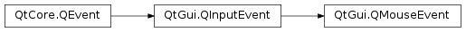

QMouseEvent¶
Synopsis¶
Detailed Description¶
The
PySide2.QtGui.QMouseEventclass contains parameters that describe a mouse event.Mouse events occur when a mouse button is pressed or released inside a widget, or when the mouse cursor is moved.
Mouse move events will occur only when a mouse button is pressed down, unless mouse tracking has been enabled with
QWidget.setMouseTracking().Qt automatically grabs the mouse when a mouse button is pressed inside a widget; the widget will continue to receive mouse events until the last mouse button is released.
A mouse event contains a special accept flag that indicates whether the receiver wants the event. You should call
PySide2.QtCore.QEvent.ignore()if the mouse event is not handled by your widget. A mouse event is propagated up the parent widget chain until a widget accepts it withPySide2.QtCore.QEvent.accept(), or an event filter consumes it.Note
If a mouse event is propagated to a
widgetfor whichQt.WA_NoMousePropagationhas been set, that mouse event will not be propagated further up the parent widget chain.The state of the keyboard modifier keys can be found by calling the
PySide2.QtGui.QInputEvent.modifiers()function, inherited fromPySide2.QtGui.QInputEvent.The functions
PySide2.QtGui.QMouseEvent.pos(),PySide2.QtGui.QMouseEvent.x(), andPySide2.QtGui.QMouseEvent.y()give the cursor position relative to the widget that receives the mouse event. If you move the widget as a result of the mouse event, use the global position returned byPySide2.QtGui.QMouseEvent.globalPos()to avoid a shaking motion.The
QWidget.setEnabled()function can be used to enable or disable mouse and keyboard events for a widget.Reimplement the
PySide2.QtWidgets.QWidgetevent handlers,QWidget.mousePressEvent(),QWidget.mouseReleaseEvent(),QWidget.mouseDoubleClickEvent(), andQWidget.mouseMoveEvent()to receive mouse events in your own widgets.See also
QWidget.setMouseTracking()QWidget.grabMouse()QCursor.pos()
-
class
PySide2.QtGui.QMouseEvent(type, localPos, button, buttons, modifiers)¶ -
class
PySide2.QtGui.QMouseEvent(type, localPos, screenPos, button, buttons, modifiers) -
class
PySide2.QtGui.QMouseEvent(type, localPos, windowPos, screenPos, button, buttons, modifiers) -
class
PySide2.QtGui.QMouseEvent(type, localPos, windowPos, screenPos, button, buttons, modifiers, source) Parameters: - localPos –
PySide2.QtCore.QPointF - source –
PySide2.QtCore.Qt.MouseEventSource - type –
PySide2.QtCore.QEvent.Type - screenPos –
PySide2.QtCore.QPointF - modifiers –
PySide2.QtCore.Qt.KeyboardModifiers - button –
PySide2.QtCore.Qt.MouseButton - buttons –
PySide2.QtCore.Qt.MouseButtons - windowPos –
PySide2.QtCore.QPointF
Constructs a mouse event object.
The
typeparameter must be one ofQEvent.MouseButtonPress,QEvent.MouseButtonRelease,QEvent.MouseButtonDblClick, orQEvent.MouseMove.The
localPosis the mouse cursor’s position relative to the receiving widget or item. The window position is set to the same value aslocalPos. Thebuttonthat caused the event is given as a value from theQt.MouseButtonenum. If the eventtypeisMouseMove, the appropriate button for this event isQt.NoButton. The mouse and keyboard states at the time of the event are specified bybuttonsandmodifiers.The
PySide2.QtGui.QMouseEvent.screenPos()is initialized toQCursor.pos(), which may not be appropriate. Use the other constructor to specify the global position explicitly.Constructs a mouse event object.
The
typeparameter must beQEvent.MouseButtonPress,QEvent.MouseButtonRelease,QEvent.MouseButtonDblClick, orQEvent.MouseMove.The
localPosis the mouse cursor’s position relative to the receiving widget or item. The cursor’s position in screen coordinates is specified byscreenPos. The window position is set to the same value aslocalPos. Thebuttonthat caused the event is given as a value from theQt.MouseButtonenum. If the eventtypeisMouseMove, the appropriate button for this event isQt.NoButton.buttonsis the state of all buttons at the time of the event,modifiersthe state of all keyboard modifiers.Constructs a mouse event object.
The
typeparameter must beQEvent.MouseButtonPress,QEvent.MouseButtonRelease,QEvent.MouseButtonDblClick, orQEvent.MouseMove.The points
localPos,windowPosandscreenPosspecify the mouse cursor’s position relative to the receiving widget or item, window, and screen, respectively.The
buttonthat caused the event is given as a value from theQt.MouseButtonenum. If the eventtypeisMouseMove, the appropriate button for this event isQt.NoButton.buttonsis the state of all buttons at the time of the event,modifiersthe state of all keyboard modifiers.Constructs a mouse event object.
The
typeparameter must beQEvent.MouseButtonPress,QEvent.MouseButtonRelease,QEvent.MouseButtonDblClick, orQEvent.MouseMove.The points
localPos,windowPosandscreenPosspecify the mouse cursor’s position relative to the receiving widget or item, window, and screen, respectively.The
buttonthat caused the event is given as a value from theQt.MouseButtonenum. If the eventtypeisMouseMove, the appropriate button for this event isQt.NoButton.buttonsis the state of all buttons at the time of the event,modifiersis the state of all keyboard modifiers.The source of the event is specified by
source.- localPos –
-
PySide2.QtGui.QMouseEvent.l¶
-
PySide2.QtGui.QMouseEvent.w¶
-
PySide2.QtGui.QMouseEvent.s¶
-
PySide2.QtGui.QMouseEvent.caps¶
-
PySide2.QtGui.QMouseEvent.velocity¶
Return type: PySide2.QtCore.Qt.MouseButtonReturns the button that caused the event.
Note that the returned value is always
Qt.NoButtonfor mouse move events.See also
PySide2.QtGui.QMouseEvent.buttons()Qt.MouseButton
Return type: PySide2.QtCore.Qt.MouseButtonsReturns the button state when the event was generated. The button state is a combination of
Qt.LeftButton,Qt.RightButton,Qt.MidButtonusing the OR operator. For mouse move events, this is all buttons that are pressed down. For mouse press and double click events this includes the button that caused the event. For mouse release events this excludes the button that caused the event.See also
PySide2.QtGui.QMouseEvent.button()Qt.MouseButton
-
PySide2.QtGui.QMouseEvent.flags()¶ Return type: PySide2.QtCore.Qt.MouseEventFlagsReturns the mouse event flags.
The mouse event flags provide additional information about a mouse event.
See also
Qt.MouseEventFlagQGraphicsSceneMouseEvent.flags()
-
PySide2.QtGui.QMouseEvent.globalPos()¶ Return type: PySide2.QtCore.QPointReturns the global position of the mouse cursor at the time of the event . This is important on asynchronous window systems like X11. Whenever you move your widgets around in response to mouse events, may differ a lot from the current pointer position
QCursor.pos(), and fromQWidget.mapToGlobal(PySide2.QtGui.QMouseEvent.pos()).
-
PySide2.QtGui.QMouseEvent.globalX()¶ Return type: PySide2.QtCore.intReturns the global x position of the mouse cursor at the time of the event.
-
PySide2.QtGui.QMouseEvent.globalY()¶ Return type: PySide2.QtCore.intReturns the global y position of the mouse cursor at the time of the event.
-
PySide2.QtGui.QMouseEvent.localPos()¶ Return type: PySide2.QtCore.QPointFReturns the position of the mouse cursor as a
PySide2.QtCore.QPointF, relative to the widget or item that received the event.If you move the widget as a result of the mouse event, use the screen position returned by
PySide2.QtGui.QMouseEvent.screenPos()to avoid a shaking motion.
-
PySide2.QtGui.QMouseEvent.pos()¶ Return type: PySide2.QtCore.QPointReturns the position of the mouse cursor, relative to the widget that received the event.
If you move the widget as a result of the mouse event, use the global position returned by
PySide2.QtGui.QMouseEvent.globalPos()to avoid a shaking motion.
-
PySide2.QtGui.QMouseEvent.screenPos()¶ Return type: PySide2.QtCore.QPointFReturns the position of the mouse cursor as a
PySide2.QtCore.QPointF, relative to the screen that received the event.
-
PySide2.QtGui.QMouseEvent.setLocalPos(localPosition)¶ Parameters: localPosition – PySide2.QtCore.QPointFSets the local position in the mouse event to
localPosition. This allows to re-use one event when sending it to a series of receivers that expect the local pos in their respective local coordinates.See also
-
PySide2.QtGui.QMouseEvent.source()¶ Return type: PySide2.QtCore.Qt.MouseEventSourceReturns information about the mouse event source.
The mouse event source can be used to distinguish between genuine and artificial mouse events. The latter are events that are synthesized from touch events by the operating system or Qt itself.
Note
Many platforms provide no such information. On such platforms
Qt.MouseEventNotSynthesizedis returned always.See also
Qt.MouseEventSourceQGraphicsSceneMouseEvent.source()
-
PySide2.QtGui.QMouseEvent.windowPos()¶ Return type: PySide2.QtCore.QPointFReturns the position of the mouse cursor as a
PySide2.QtCore.QPointF, relative to the window that received the event.If you move the widget as a result of the mouse event, use the global position returned by
PySide2.QtGui.QMouseEvent.globalPos()to avoid a shaking motion.
-
PySide2.QtGui.QMouseEvent.x()¶ Return type: PySide2.QtCore.intReturns the x position of the mouse cursor, relative to the widget that received the event.
-
PySide2.QtGui.QMouseEvent.y()¶ Return type: PySide2.QtCore.intReturns the y position of the mouse cursor, relative to the widget that received the event.
© 2018 The Qt Company Ltd. Documentation contributions included herein are the copyrights of their respective owners. The documentation provided herein is licensed under the terms of the GNU Free Documentation License version 1.3 as published by the Free Software Foundation. Qt and respective logos are trademarks of The Qt Company Ltd. in Finland and/or other countries worldwide. All other trademarks are property of their respective owners.